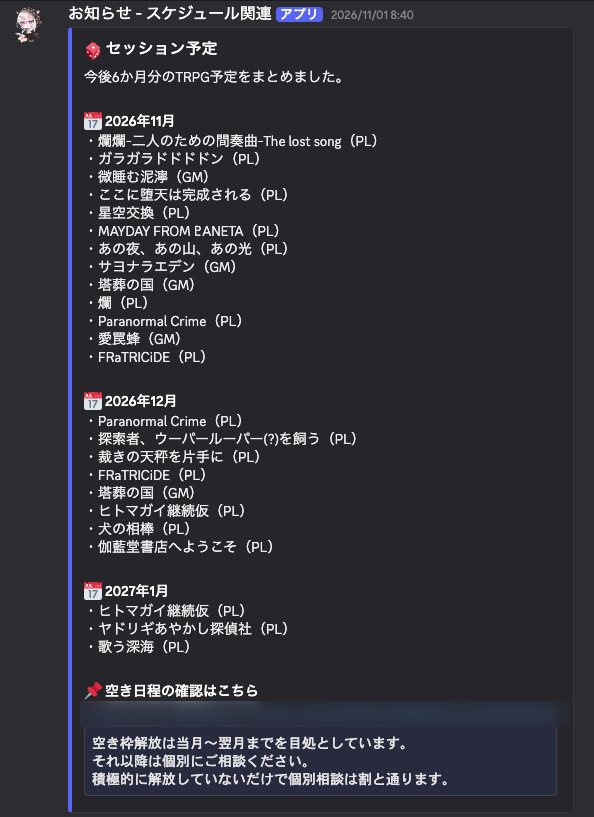

実際の投稿

できること
月ごとにまとめて投稿
カレンダーの予定を月ごとに並べて、Discord に投稿します。
同じシナリオは1件に
同じ月に同じシナリオが何回あっても、まとめて1件で表示します。
GM か PL かを表示
予定の説明に決めた文字があれば「GM」、なければ「PL」と表示します（任意）。
リンクやお知らせを添える
空き日程の表へのリンクなど、毎回載せたい案内を最後に付けられます（任意）。
毎月自動で投稿
一度設定すれば、毎月決まった日時に自動で投稿します。
必要なもの
- Google アカウント（セッション予定を入れているカレンダー）
- 投稿先の Discord サーバー（Webhook を作れる権限が必要です）
どちらも無料で使えます。コードを書く必要はなく、ファイルの中身を Google Apps Script に貼り付けて設定するだけです。
セッション予定だけを入れたカレンダーを1つ作っておくのがおすすめです。仕事や私用の予定と同じカレンダーを指定すると、それらも投稿されてしまいます。
安全性について
- Discord の Webhook URL やカレンダー ID は、自分の Apps Script の中にだけ保存します。作者を含め、ほかの人には送られません。
- 通信先は、自分で設定した Discord の Webhook だけです。
- 投稿されるのは、予定のタイトルと月だけです。日付・時刻・説明・参加者は投稿しません。
はじめかた
- Google Apps Script で新しいプロジェクトを作り、コードを貼り付ける
- Discord で投稿先チャンネルの Webhook を作る
- Google カレンダーの「カレンダー ID」をコピーする
- スクリプト プロパティに、カレンダー ID と Webhook URL を登録する
- 試しに投稿して、届くことを確かめる
setupMonthlyTriggerを一度実行して、毎月の自動投稿を登録する
作った経緯と使い方は note 記事 に、詳しい手順と設定項目の一覧は GitHub の README にまとめています。
質問・不具合の報告
分かりにくいところや動かないところがあれば、GitHub の Issue で気軽に教えてください。